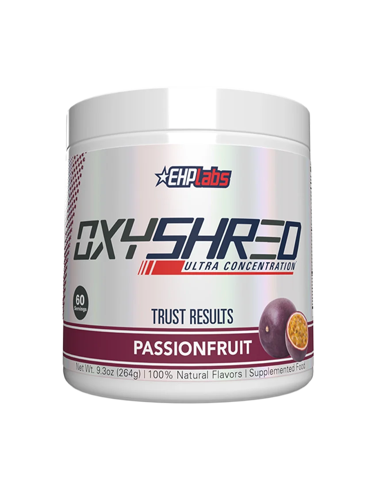
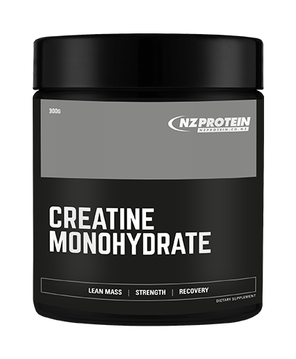
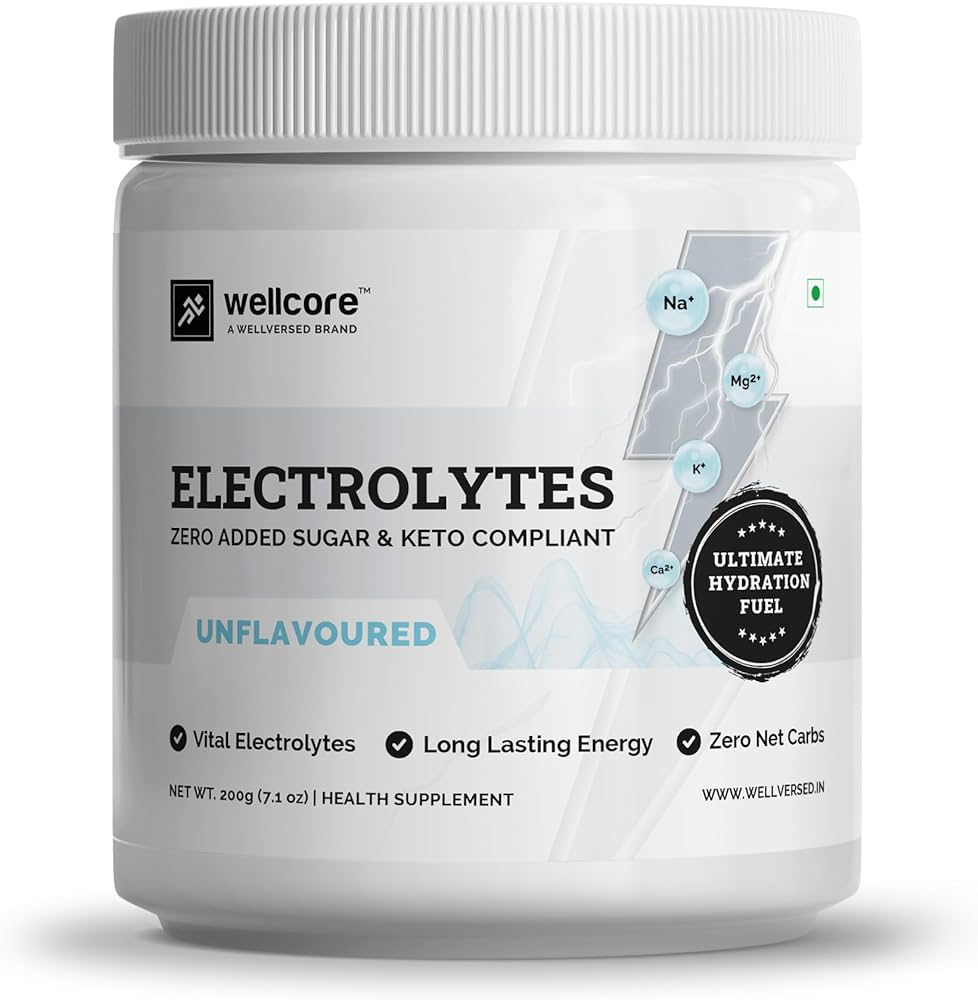
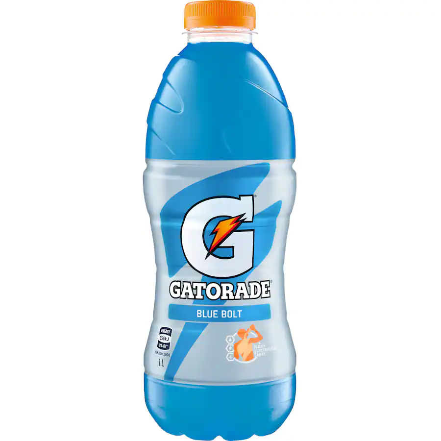
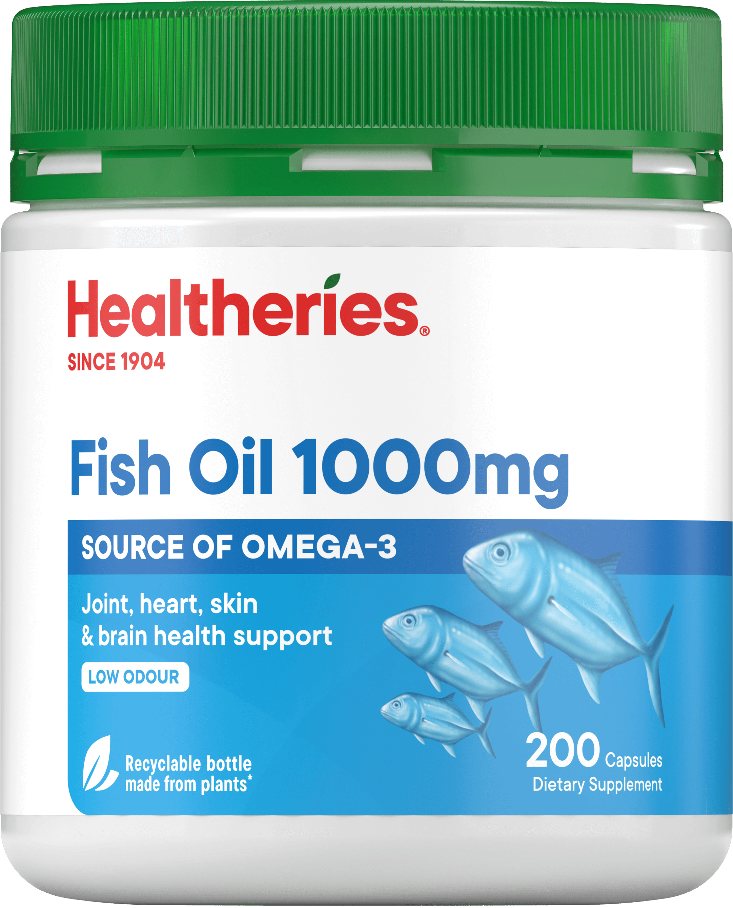
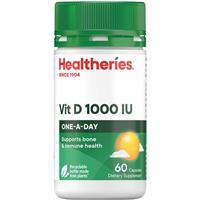

Supplements
-

Oxyshred
Oxyshred is a fat burner supplement which contains caffeine and other stimulants which are designed to improve your energy levels, boost immunity and strengthen your focus. Oxyshred also increases your metabolism and decreases your appetite for weightloss.
Where to buy: You can buy oxyshred at your local supplement shop such at supplements.co.nz.
-

Creatine
Creatine is a supplement which is said to improve strength, increase lean muscle mass and helps muscles recover quicker during exercise. Creatine also creates a burst of energy when taken, that, with the improved strength boosts your athletic performance without affecting your ability to exercise for longer sessions at a time.
Where to buy: Creatine can also be bought at supplement shops like supplements.co.nz and xplosiv.
-

Protein powder
Protein powder is a nutritional supplement that helps build muscle, repair tissue and makes enzymes and hormones. Using protein powder can not only help aid weight loss but also help define and tone their muscles. Protein powders can come in many forms such as dairy based or plant pased powders.
Where to buy: Protein powder can be bought at chemist warehouse, woolworths and supplement shops like infinity supplements.
-

Electrolytes
Electrolytes help to control and maintain muscle and nerve function, hydrate the body and support heart health. Electrolytes also help balance blood pressure and acidity and helps rebuild damaged tissue.
Where to buy: Liquid electrolytes such as powerade and gatorade can be bought at numerous places like supermarkets, gas stations, the warehouse and chemist warehouse. You can buy powdered electrolytes from place like chemist warehouse, supermarkets and supplement shops.
-

Fish oil
Fish oil is an omega-3 fatty acid supplement that improves workout quality. The anti-inflammatory properties of the omega-3 fatty acid protects the decline in strength, flexibility and range of motion. Fish oil also reduces muscle soreness and stiffness and pain from an intense workout.
Where to buy: Fish oil can be bought from places like supermarkets, the warehouse and chemist warehouse.
-

Vitamin D
Vitamin D can increase a lot of helpful things needed for exercising. It can increase strength, jump speed and power, exercise capacity and physical performance. Vitamin D also reduces muscle weakness and pain.
Where to buy: You can get vitamin d supplements from supplement shops, vitamin/ health shops and chemist warehouse.